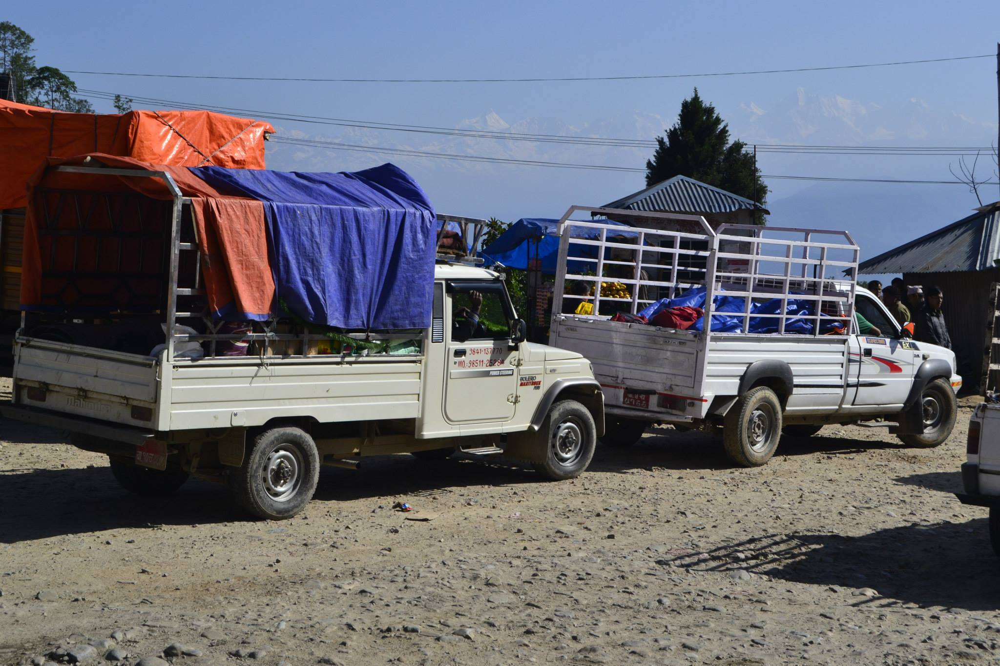
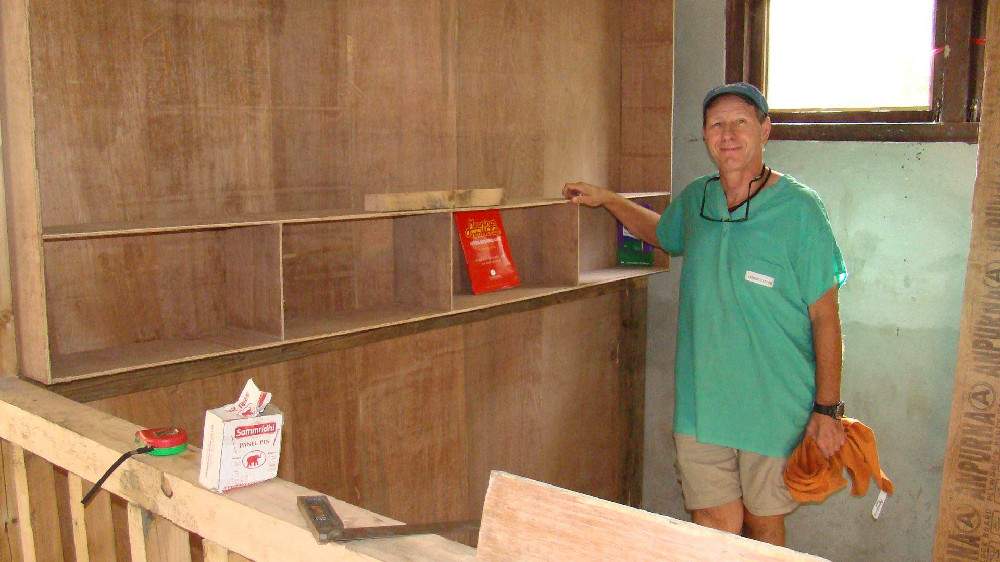

With the help of the Uniglobe Center for Social Program, Ek Artha believed that when diverse groups of people pool their resources in the spirit of genuine cooperation, transformative ideas emerge to drive life-changing action. We collaborated to inspire differently-abled people in Khagendra Navjivan Kendra, Jorpati, and Kathmandu, with the vision of Education for All. The event's highlights included an art competition, music and dance performances, and a magic show.
With the goal of providing a place to learn outside of the classroom, we assisted the Government School of Nepal in Dolakha in establishing a library with the slogan "Library as Platform Beyond Class," which was destroyed by the earthquake. Ek Artha Foundation recognizes the importance of a library where students and staff can access a variety of resources. The school library media center's mission is to provide equitable access to books and various other learning materials for all members of the school community. This library serves as the focal point and coordinating agency for all school-related materials.
 

When there is a will, there is a way, and right after the few days of earthquake, Ek Artha was able to
support quake victims in various parts of the country with the help of energetic volunteers. In contrast,
in a few regions, our volunteers walked for more than 4-5 hours with the help of locals to reach all
unreached people and provide them with basic food, tents, and clothing.
"Regardless of how many wrinkles we get in houses, we will stand and fight together until the
mountains stop moving."
In 2074 B.S., Ek Artha extended its helping hand to the flood-ravaged southern parts of Nepal. We provided stationery and clothing to the students as a way of motivating them and demonstrating our small gesture that says “We stand together to uplift the children in any way we can.”
To spread joy, Ek Artha frequently spends the holidays with the children at the orphanage. We visit the
orphanage house where we cook food, assist the children with hygiene, and spend the entire day
sharing dreams and participating in various creative activities. We also take the kids on dry picnics from
time to time. We firmly aim to:
• form alliances - with children and communities - to influence others and broaden our impact.
• innovate - create and test evidence-based, replicable solutions to problems that children face
• be the voice - advocate for better practices and policies that fulfill children's rights and ensure that
children's voices are heard
We are all aware of the current situation, in which an estimated 225 million children are still trapped in
child labor. They are denied the opportunity to be children. More than half of them, or approximately
115 million, are subjected to the most heinous forms of child labor, such as work in hazardous
environments, slavery or other forms of forced labor, illicit activities such as drug trafficking and
prostitution, and involvement in armed conflict.
We are attempting to put the values into action. Ek Artha Foundation, with the help of Success Vidhi and
the Uniglobe Center for Social Programs, attempted to break the ice by organizing an event to raise
public awareness about the growing trend of child labor and to assist students in receiving basic
education. And to that end, we organized an inter-college video competition with panels for both
undergraduate and graduate students. It was a competition to learn about the young minds'
perspectives on how to end the social problems associated with child labor.
It improved students' social values, skills, and abilities to analyze, create, and design plans that can
change people's minds. We believe that our work provided our participants with an experience that will
be the deciding factor in the difference between actual actions. It acted as an initiative to establish a
perfect benchmark and develop it as an event to bring different participants from various institutions
and backgrounds together on a single platform to celebrate togetherness, bonding, and a friendly
relationship. This event allowed our participants to collaborate with other competent individuals,
expand their network, and work together for the betterment of society.
We worked as a third eye under the direction of the Nepal Election Commission to supervise and monitor the 2022 central government election. Our volunteers were supervised in all 7 provinces of Nepal to successfully complete the central government election without any hassle or difficulties. We played role in activities like crowd management, voting booth management, and vote counting while also playing a role in securing the voting area.
Ek Artha is doing everything it can to make children's well-being accessible in every class and community
in Dolakha, and then to make every child's well-being activities a real case of children right through
various programs of social mobilization and awareness formation. As a result of Nepal's devastating
earthquake, the reconstruction of thousands of damaged and destroyed schools in Dolakha has become
critical. Keeping this in mind, we work to improve the lives of destitute children by building schools
where they can learn and live independently as self-sufficient members of society. We are committed to
improving their quality of life and considering their future well-being. Ek Artha works together to
provide a mutual platform for collaboration, cooperation, joint actions, and collective endeavors in
order to develop and launch a new start-up venture for the benefit of Dolakha. We also provide a
comfortable environment, an opportunity for eminence education, and the construction of a school for
the benefit of children.
Working with us as volunteers allows them to gain a better understanding of the organization's history
and the project's goals. The development context in Nepal and become aware of the need for
accountable volunteer performance. This not only improves your experience, but also ensures that your
contribution is decent and valuable. Thus, gaining prospects is used prior to, during, and after the
placement of volunteers. While preparing for their stay, volunteers are given comprehensive
information packs, and once they arrive, they are given detailed information about the work as well as
Nepal's culture, language, and customs. Furthermore, each volunteer's daily routine will be unique and
tailored to the skills they possess and the needs of the organization. We will receive your feedback and
information about your work experience on a regular basis to ensure the comfort of volunteers.